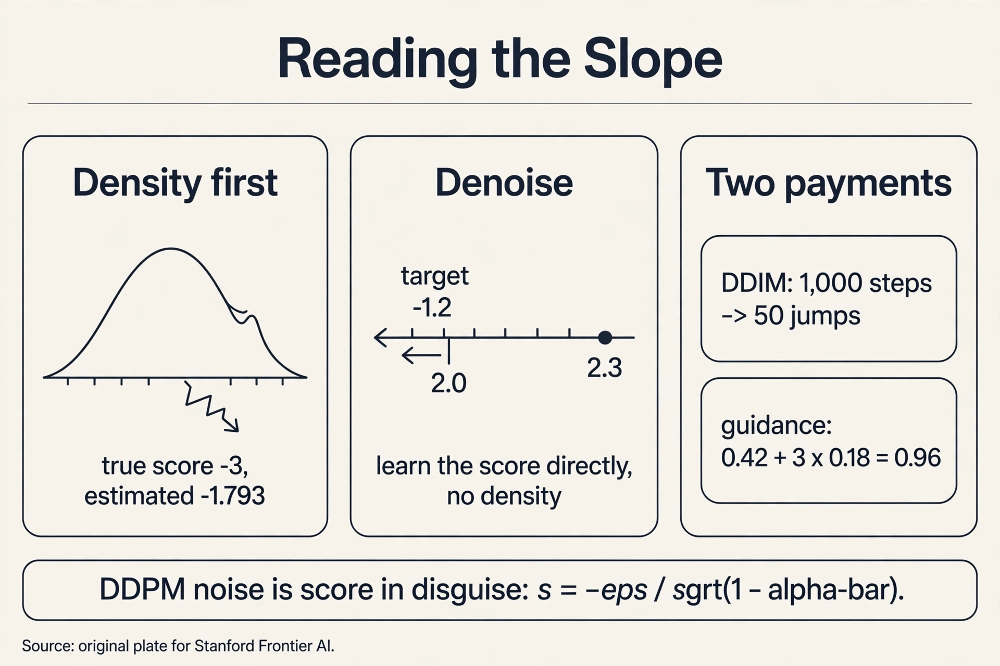

Lecture 6: Score Matching and Diffusion II — Reading the Slope
Video blocked (ad-blocker or local file mode).
Watch on YouTubeVideo not loading? Watch on YouTube
Original Stanford lecture. Timestamps in the text link to the exact moment.
The question, through a new lens
Restate the one question: learn the rule behind samples, draw fresh samples from it. L05’s restorer learns to remove noise step by step. This lesson re-reads the same machine through a new lens: at every noise level, the denoiser points uphill on the probability landscape. Learn the slope, walk uphill, and you sample. The slope has a name: the score, the gradient of the log-density, s(x) = grad log p(x). It points toward higher probability, with length equal to the steepness.
Work it on the bell curve p(x) = N(0,1). log p(x) = -x^2/2 minus a constant. Differentiate: s(x) = -x. At x = 2.3, the score is -2.3: pointing left, back toward the mean, with strength 2.3. At x = 0 the score is 0: the peak, no slope. The score is a vector field that always says “higher probability is that way.”
First attempt: differentiate a learned density
The naive route: learn the density p(x) from samples, then differentiate it to get the score. Watch it fail. True distribution N(0,1), true score s(x) = -x. Suppose the learned density picks up a small spurious wobble from finite samples:
p-hat(x) ~ exp(-x^2/2) x (1 + 0.3 sin(4x)) score-hat(x) = -x + 1.2 cos(4x) / (1 + 0.3 sin(4x))
At x = 3, the true score is -3. The wobble term is 1.2 x cos(12) / (1 + 0.3 x sin(12)) = 1.2 x 0.8439 / (1 - 0.161) = 1.207. The estimated score is -3 + 1.207 = -1.793, off by 40%. A 30% wiggle in the density became a 40% error in the score. Differentiation amplifies every bump the density estimate got wrong.
The failure concentrates where it hurts most. Far from the data (x = 3 has few samples), the density estimate is worst, so the score estimate is worst exactly where a sampler needs guidance to find its way back. Learning the density first is the wrong order: the score is what sampling needs, and it deserves its own objective.
The key question
What if we learn the score directly, without ever learning the density, by asking the machine to denoise?
The new idea: denoising score matching
Corrupt a clean sample: x-tilde = x + sigma x epsilon. Train a network s_theta(x-tilde) to predict (x - x-tilde)/sigma^2, the direction from the corrupted point back to the clean one, scaled. That target is minus the noise over the noise variance: -epsilon / sigma.
Work it. Clean x = 2.0, sigma = 0.5, drawn epsilon = 0.6:
x-tilde = 2.0 + 0.5 x 0.6 = 2.3 target = (2.0 - 2.3) / 0.25 = -1.2
One training target: -1.2. Averaged over many corruptions of many clean samples, this target equals the score of the noise-perturbed distribution, grad log q_sigma(x-tilde). As sigma shrinks, q_sigma approaches the true p, and the learned score approaches the true score. No density is ever estimated. The wobble problem vanishes because there is no density to wobble.
Noise corruption also fixes the empty-region problem. The corrupted samples blanket the space around the data, so the network trains on points far from any clean sample and learns sensible return directions everywhere. The score field is populated by construction.
Sampling: walk uphill with noise
Given the score, sample with Langevin dynamics: follow the score uphill, plus a dash of noise to explore:
x <- x + (delta/2) s_theta(x) + sqrt(delta) z, z ~ N(0,1)
Work two steps at x = 2.3 with learned score -2.3 and delta = 0.1. Draw z = -0.4:
x <- 2.3 + 0.05 x (-2.3) + 0.316 x (-0.4) = 2.3 - 0.115 - 0.126 = 2.059
The score term pulls toward the mean. The noise term jitters. Repeated, the chain wanders but lingers where the score is small, which is where probability is high. Run it at decreasing noise levels (annealed Langevin): coarse scores first, fine scores later. That annealing schedule is exactly DDPM’s reverse chain from L05, wearing different notation.
The lecture’s punchline: DDPM predicts scores
W9L35 reframes L05’s denoiser: predicting the noise epsilon is predicting the score. The relation is one division:
s(x_t) = - epsilon-hat(x_t, t) / sqrt(1 - alpha-bar_t)
Work it on L05’s toy. At t = 1, alpha-bar_1 = 0.99, sqrt(1 - 0.9801)… precisely sqrt(1 - 0.99) = 0.1. The toy’s predicted noise was epsilon-hat = 0.42:
s(x_1) = -0.42 / 0.1 = -4.2
The denoiser that predicted noise 0.42 at x_1 = 0.846 was really saying “the log-density slopes downward with steepness 4.2 here.” DDPM training (MSE on noise) is denoising score matching at every noise level simultaneously. Two lectures, one machine.
Mapping back: what each property fixes
| Density-first failure | Score-matching answer | How |
|---|---|---|
| Differentiation amplifies density wobbles: -3 estimated as -1.793 | Learn the score directly | Denoising target; no density estimated, nothing to differentiate |
| Empty regions have the worst scores | Corrupt with noise during training | Corrupted samples blanket the space; return directions learned everywhere |
| One noise level gives one blurred view | Many noise levels (annealed) | Coarse-to-fine schedule; equals DDPM’s reverse chain |
The honest price, and two ways to pay less
Price 1: no likelihoods. The score discards the normalizing constant: grad log p(x) = grad p(x)/p(x) never sees the partition function. A score model samples beautifully and cannot tell you p(x). For anomaly detection or compression, which need densities, the warper (L04) keeps its exactness crown.
Price 2: step-size fragility, demonstrated. Langevin with too large a delta overshoots. At x = 2.3, score -2.3, delta = 1.0, z = 0:
x <- 2.3 + 0.5 x (-2.3) + 0 = 1.15
One step jumped from 2.3 to 1.15, past the region the score was estimated for. Repeated overshooting oscillates or diverges. Delta = 0.1 crept safely to 2.059. The sampler needs small steps and many of them: the serial bill again.
Paying less, way 1: DDIM. L05’s sampler takes all 1,000 steps because each reverse step was derived for the full chain. DDIM reuses the same trained denoiser but jumps: from t = 1000 directly to t = 800, then 600, and so on. The update uses the predicted noise to estimate x_0, then re-noises to the target level, deterministically (no added z). Fifty jumps replace a thousand steps: a 20x speedup from the same network, with a small quality cost. The price becomes optional.
Paying less, way 2: guidance. To steer sampling toward a condition (a text prompt, a class label), train the denoiser twice in one: conditional epsilon_c and unconditional epsilon_u (trained by randomly dropping the condition). Sample with the extrapolated noise:
epsilon-tilde = epsilon_u + w (epsilon_c - epsilon_u)
Work it: epsilon_u = 0.42, epsilon_c = 0.60, w = 3:
epsilon-tilde = 0.42 + 3 x 0.18 = 0.96
The guidance scale w pushes the sample toward the condition. Higher w means stronger prompt match but shrinking diversity and, past a point, artifacts. This classifier-free guidance needs no separate classifier: the conditional model guides itself.
The gradient of the log-density: s(x) = grad log p(x). It points toward higher probability with strength equal to the steepness. For N(0,1), s(x) = -x: at x = 2.3 the score is -2.3, pointing back toward the mean. A sampler that follows the score walks uphill on the probability landscape. The log turns products into sums (the chain rule of L02 becomes addition) and, crucially, the normalizing constant vanishes under differentiation. The score sees the shape of p but not its scale, which is why score models sample well yet cannot report likelihoods.
Corrupt x to x-tilde = x + sigma x epsilon and train the network to output (x - x-tilde)/sigma^2. On the toy: x = 2.0, sigma = 0.5, epsilon = 0.6 gives x-tilde = 2.3 and target -1.2. Averaged over corruptions, this target equals the score of the noise-perturbed distribution, which approaches the true score as sigma shrinks. The network never estimates a density, so there is nothing to differentiate and no wobble to amplify. One small sigma leaves distant regions empty: a corruption of width 0.01 never reaches x = 3 from data near 0, so the score there stays unlearned. Large sigmas blanket the space and teach coarse return directions. Small sigmas refine them. The multi-level schedule is the annealed Langevin chain, which is DDPM’s reverse process.
s(x_t) = -epsilon-hat(x_t, t) / sqrt(1 - alpha-bar_t). On the L05 toy at t = 1: epsilon-hat = 0.42, sqrt(1 - 0.99) = 0.1, so s = -4.2. DDPM’s MSE-on-noise training is denoising score matching at every noise level at once. Same machine, two notations. The DDPM view gives the ELBO, the sampling loop, and DDIM’s shortcuts. The score view gives Langevin sampling, the SDE unification (Song et al. 2021), and guidance as score arithmetic. Each view unlocks different tools. The lecture’s point is that the tools compose because the object is one.

Recap: the whole lesson on one screen
- The question, through a new lens. Learn the rule. Draw fresh samples. Learn the slope of log-probability and walk uphill.
- The score, concretely. s(x) = grad log p(x). For N(0,1): s(x) = -x. At 2.3, the slope is -2.3 toward the mean.
- Density-first breaks, demonstrated. A 30% wobble in learned density turns true score -3 into -1.793. Differentiation amplifies error, worst in empty regions.
- The key question. What if we learn the score directly by denoising, never estimating a density?
- Denoising score matching, by hand. x = 2.0, sigma = 0.5, epsilon = 0.6: x-tilde = 2.3, target -1.2. Averages to the perturbed score.
- Langevin, by hand. delta = 0.1, z = -0.4: 2.3 -> 2.059. Score pulls in, noise explores. Annealed schedule equals DDPM’s chain.
- DDPM predicts scores. s = -0.42/0.1 = -4.2 on the L05 toy. One machine, two notations.
- Prices and payments. No likelihoods (constant discarded). Step-size fragility: delta = 1.0 overshoots 2.3 -> 1.15. DDIM: 1,000 steps -> 50, 20x speedup. Guidance: 0.42 + 3 x 0.18 = 0.96.
Official sources and further reading
Official: - W9L35: DDPMs as score-predictors (video 2Sp0BqAWWXY) and W9L38: DDIMs (video qiMJBB8chzI): the lectures this chapter follows. [uncertain]: the exact toy numbers in the lectures are not verified. The worked values here are original toys built to the lectures’ topics. - Song & Ermon (2019): https://arxiv.org/abs/1907.05600 — score-based modeling with annealed Langevin. - Song et al. (2021): https://arxiv.org/abs/2010.02502 — the SDE unification of DDPM and score matching.
Further reading: - Ho & Salimans (2022), classifier-free guidance: the epsilon_u + w(epsilon_c - epsilon_u) formula. - Song, Meng & Ermon, DDIM (2020): https://arxiv.org/abs/2010.02502 — deterministic few-step sampling.
Caveats from these sources. The 1-D toys are illustrative. Real score models estimate high-dimensional score fields with U-Nets. The denoising target equals the perturbed score only in expectation over corruptions. Single targets are noisy. DDIM’s quality at 50 steps depends on the data and the schedule. The 20x figure is representative, not guaranteed.
Connections to the other courses
- L05 (this course): the same machine in DDPM notation. The 0.846 toy reused and re-read as a score.
- CS229 L11: annealed Langevin as the conceptual parent of the reverse chain.
- math-genai (sibling): guided diffusion (W9 lectures): classifier and classifier-free guidance in the lecture’s own framing.
- CS336: the denoiser architecture: the U-Net/transformer that predicts epsilon at every scale, and how t conditions it.